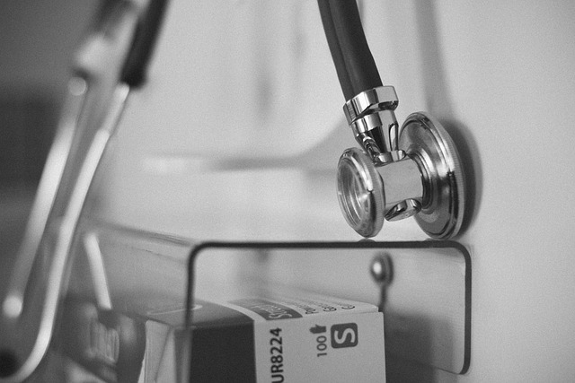
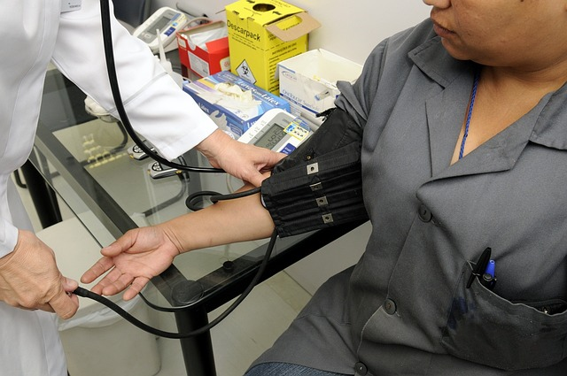
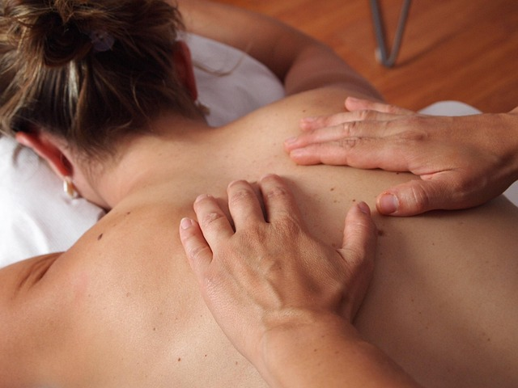

TRATAMENTO LONDRINA · PARANÁ
Peeling de cristal — microdermoabrasão
Projeta pequenos cristais sobre a pele e os remove por sucção, promovendo uma esfoliação mecânica superficial. Pode ser útil para melhorar a aparência opaca e suavizar irregularidades leves de textura.

Como este tratamento é planejado
Microdermoabrasão com fluxo de cristais e sucção controlada.
Na consulta, a queixa, o histórico, a condição atual da pele e os objetivos ajudam a definir se esta opção faz sentido, se é necessário preparar a região ou se outro caminho é mais adequado.

Quando pode ser considerado
Acúmulo de células superficiais, aspereza e textura irregular leve.
A possibilidade de realizar o tratamento depende de fatores como integridade da pele, exposição solar, procedimentos recentes, medicamentos, alergias e condições relevantes informadas na avaliação.
Recuperação e expectativas
O tempo de recuperação, a necessidade de cuidados posteriores e a resposta variam conforme a técnica, a área e a pessoa. Nenhuma página consegue confirmar indicação, número de sessões ou resultado para um caso individual.
Sinais como dor intensa, secreção, piora progressiva, febre, bolhas extensas ou alteração importante de cor devem ser comunicados e podem exigir avaliação médica.

Atendimento em Londrina e região
Franciele atende em Londrina. Pessoas de cidades próximas do Norte do Paraná podem buscar uma consulta quando desejarem uma avaliação presencial; a indicação continua individual e não depende de onde a pessoa mora.
Agendar uma consulta em Londrina → · Ver todos os tratamentos →